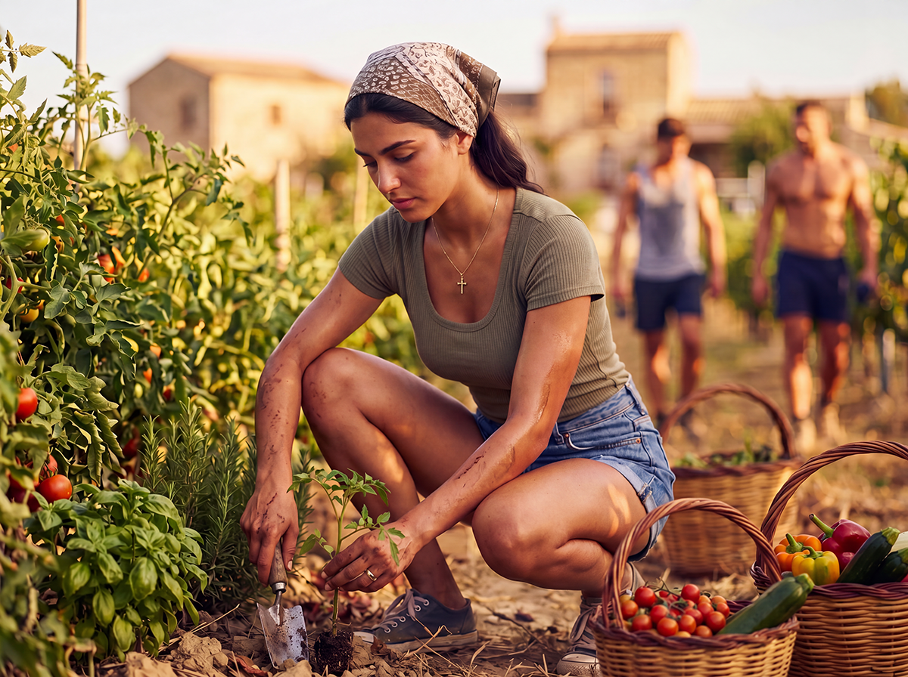
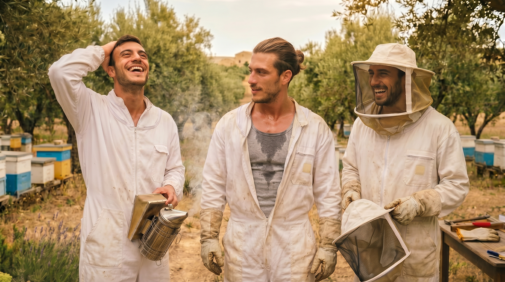
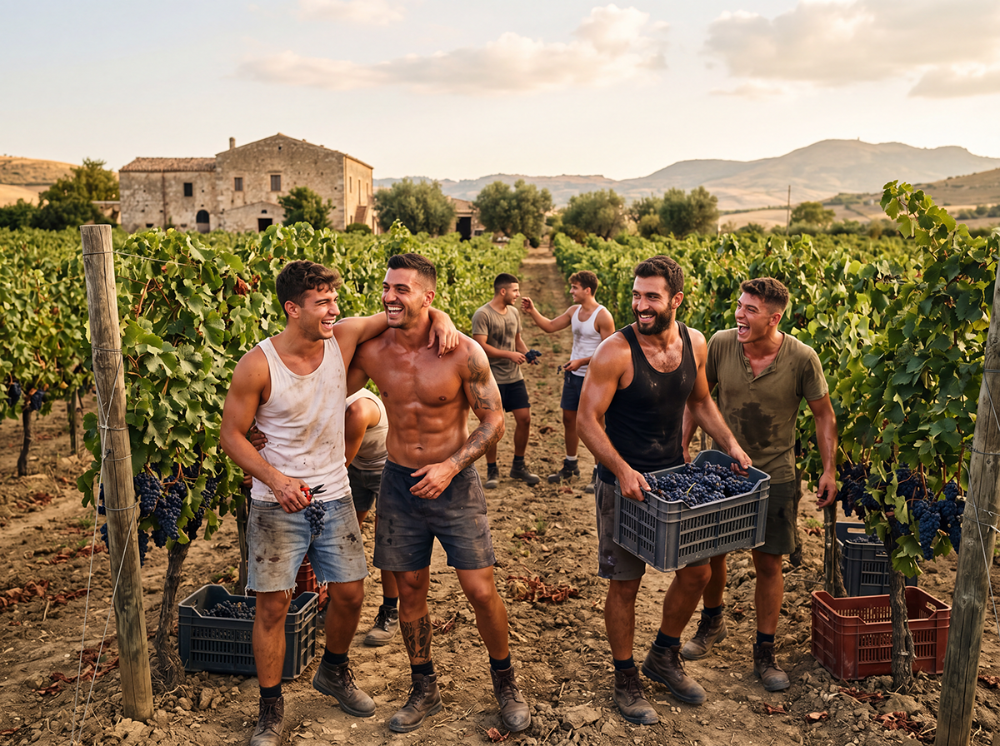
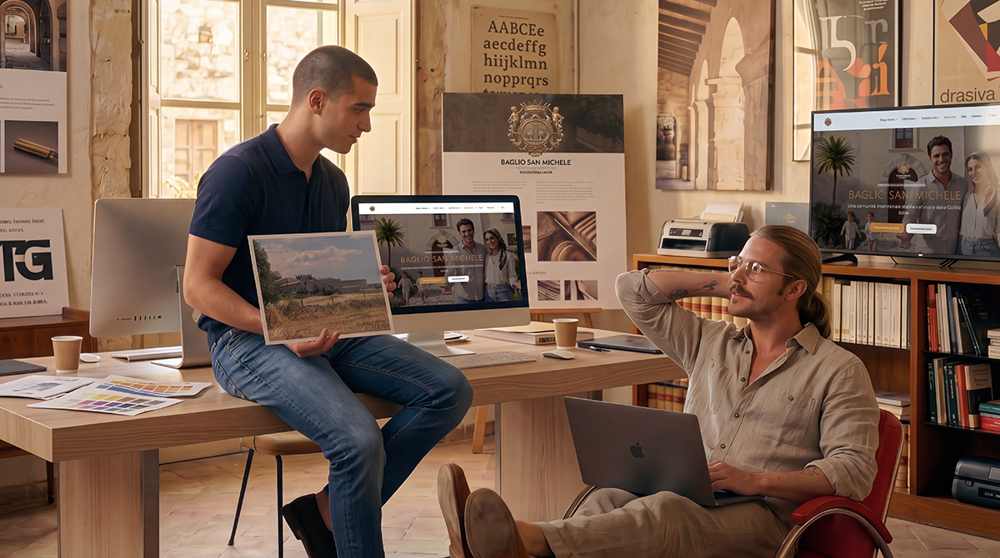

Sicilian Slow Living
In the heart of Iblean Sicily, Sicilian Slow Living is not a trend, but a return to origins. It is respect for the slow rhythms of nature, the valorisation of farming traditions, care for human relationships and a deep bond with the fertile land of olive trees, citrus and limestone.
Modus vivendi

Roots in Tradition
The reconstruction of ancient farmhouses such as Baglio San Michele is not an exercise in nostalgia, but a concrete act of regeneration. We use traditional Sicilian building techniques: dry-stone walls, barrel vaults, local tuff and natural materials from the territory.
The agricultural practices we adopt are those historically used in the Ragusa area: crop rotation, natural fertilisation, respectful pruning of centuries-old olive trees and sustainable water management through traditional collection and distribution systems.

Mediterranean Permaculture
This is not simply organic farming, but a system designed to imitate the natural processes of the Mediterranean scrub and regenerate the soil.
- Synergistic gardens and companion planting
- Orchards with ancient Sicilian varieties
- Natural beekeeping
- Water management
- Respectful extensive livestock farming

Intergenerational Community
An extended family. Self-sufficient elders become the pillars of the community. They care for the children, pass on stories, values and practical skills. In return they receive companionship, help and a renewed sense of purpose.

Authentic Self-Sufficiency
Local production of food, energy and crafts. Every family contributes according to its skills, creating a circular economy within the Borgo.
Creativity and smart working
Writers, illustrators, developers, architects, designers, coaches: many are already organising themselves. They bring valuable skills — from graphic design for our future farm stay, to creating an app to coordinate garden shifts.
But they also learn to disconnect. They discover that their work becomes more creative when in the morning they mow the meadow or watch the bees for half an hour. They understand that a deadline can wait for sunset. And that if the Wi-Fi connection is excellent… the connection with themselves is even better.

High-performance Wi-Fi throughout the common areas
Outdoor coworking with views over the fields
“Slow hours” in the evening without notifications (optional but encouraged)
LEARNING BY DOING
Professional training and Permaculture

Horticulture & Permaculture
Design and manage a synergistic garden. Learn to read the landscape, create fertile soils and cultivate in harmony with nature.
Next edition: March 2027

Beekeeping & Bee Stewardship
Become a conscious beekeeper. Hive management, swarms, diseases, production of honey, propolis and pollen.
Next edition: April 2027

Backyard Livestock & Poultry
Chickens, ducks, geese, rabbits. Setting up the chicken coop, natural feeding, reproduction, ethical slaughter.
Next edition: May 2027
Each course includes field practice, teaching materials, a certificate and access to the permanent Borgo community.
Slow Living at Baglio San Michele

Natural biological rhythms
Days marked from dawn to dusk. Work in the fields, breaks in the shade of centuries-old olive trees, dinners with freshly harvested produce.

Sharing and transmission
Elders pass on their knowledge and wisdom. Young families learn and contribute with new energy.

Creativity and remote work
Spaces for digital nomads immersed in Sicilian beauty: sea views, silence, inspiration for artists and creatives.